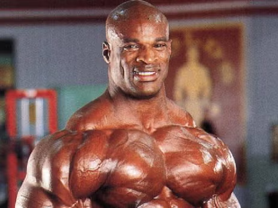

Ronnie Coleman

Ronnie Coleman es un reconocido fisicoculturista profesional y considerado uno de los mejores de la historia. Nació en Estados Unidos y ganó el título de Mr. Olympia en ocho ocasiones consecutivas (1998–2005). Es famoso por su enorme fuerza, su disciplina extrema en el entrenamiento y su físico masivo y definido. A lo largo de su carrera se destacó por levantar pesos muy altos y por su mentalidad motivadora, convirtiéndose en un referente del culturismo y del entrenamiento de alto rendimiento. Dicho esto es un gran orgullo que forme parte de nuestro equipo. su amabilidad combinada con su intensidad forman un caracter mas que ideal para nuestro gymnasio
Entrenador Personal
Especialista en entrenamiento físico que diseña rutinas personalizadas según los objetivos de cada persona. Se encarga de enseñar la técnica correcta de los ejercicios, motivar a los alumnos y supervisar el progreso para mejorar fuerza, resistencia y condición física.
Nutricionista Deportivo
Profesional encargado de planificar la alimentación de los deportistas y personas que entrenan. Diseña dietas equilibradas para mejorar el rendimiento, favorecer la recuperación muscular y ayudar a alcanzar objetivos como ganar masa muscular o perder grasa.
Instructor de Cross Training
Entrenador especializado en entrenamientos de alta intensidad que combinan fuerza, resistencia y ejercicios funcionales. Motiva a los alumnos a superar sus límites y mejora su rendimiento físico general
Fisioterapeuta Deportivo
Profesional de la salud encargado de prevenir, evaluar y tratar lesiones relacionadas con la actividad física. Ayuda a los deportistas a recuperarse, mejorar la movilidad y mantener el cuerpo en buenas condiciones para continuar entrenando de forma segura.